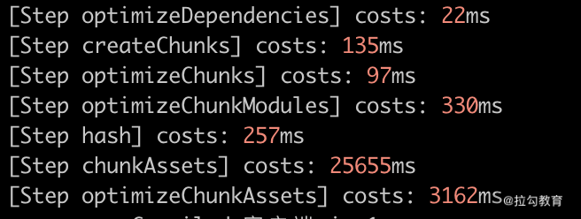
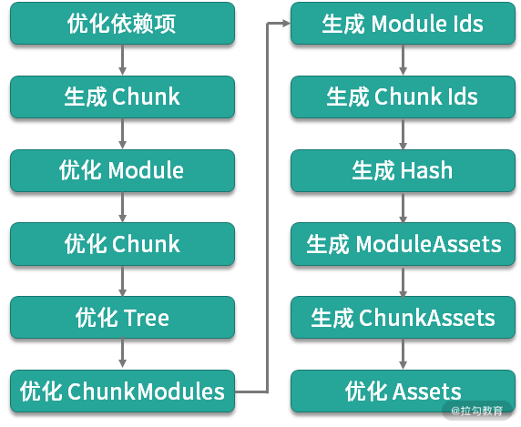
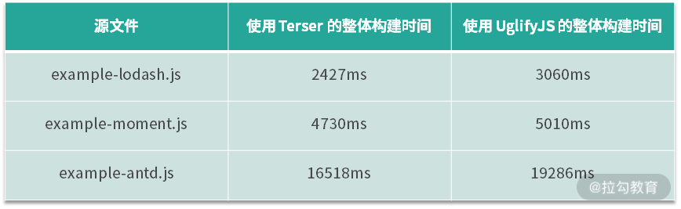
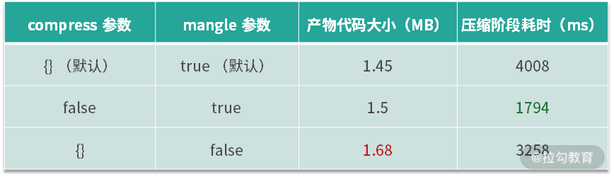
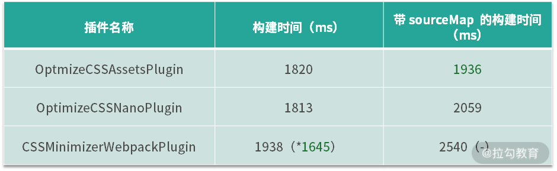
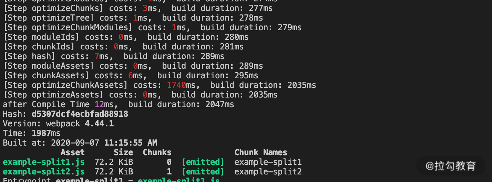
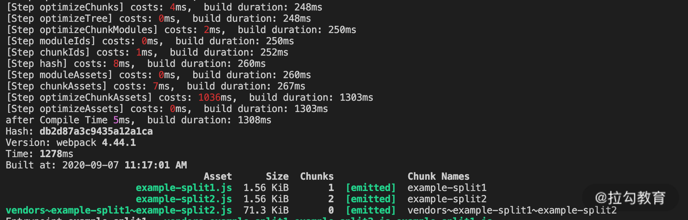
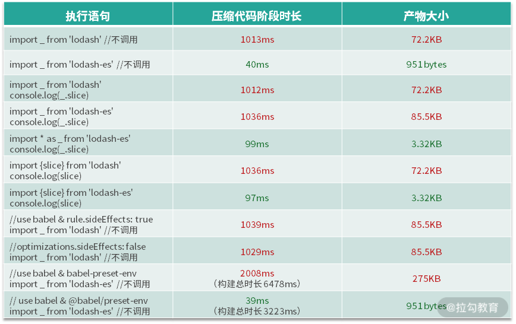

- 00 开篇词 建立上帝视角，全面系统掌握前端效率工程化.md.html
- 01 项目基石：前端脚手架工具探秘.md.html
- 02 界面调试：热更新技术如何开着飞机修引擎？.md.html
- 03 构建提速：如何正确使用 SourceMap？.md.html
- 04 接口调试：Mock 工具如何快速进行接口调试？.md.html
- 05 编码效率：如何提高编写代码的效率？.md.html
- 06 团队工具：如何利用云开发提升团队开发效率？.md.html
- 07 低代码工具：如何用更少的代码实现更灵活的需求.md.html
- 08 无代码工具：如何做到不写代码就能高效交付？.md.html
- 09 构建总览：前端构建工具的演进.md.html
- 10 流程分解：Webpack 的完整构建流程.md.html
- 11 编译提效：如何为 Webpack 编译阶段提速？.md.html
- 12 打包提效：如何为 Webpack 打包阶段提速？.md.html
- 13 缓存优化：那些基于缓存的优化方案.md.html
- 14 增量构建：Webpack 中的增量构建.md.html
- 15 版本特性：Webpack 5 中的优化细节.md.html
- 16 无包构建：盘点那些 No-bundle 的构建方案.md.html
- 17 部署初探：为什么一般不在开发环境下部署代码？.md.html
- 18 工具盘点：掌握那些流行的代码部署工具.md.html
- 19 安装提效：部署流程中的依赖安装效率优化.md.html
- 20 流程优化：部署流程中的构建流程策略优化.md.html
- 21 容器方案：从构建到部署，容器化方案的优势有哪些？.md.html
- 22 案例分析：搭建基本的前端高效部署系统.md.html
- 23 结束语 前端效率工程化的未来展望.md.html
12 打包提效：如何为 Webpack 打包阶段提速？
上节课我们聊了 Webpack 构建流程中第一阶段，也就是编译模块阶段的提效方案，这些方案可以归为三个不同的优化方向。不知道大家课后有没有对照分析自己在项目里用到了其中的哪些方案呢？
今天我们就来继续聊聊 Webpack 构建流程中的第二个阶段，也就是从代码优化到生成产物阶段的效率提升问题（这节课的示例代码参照 [12_optimize_efficiency]）。
准备分析工具
同上节课一样，在分析优化阶段的提效方案之前，我们还是需要先来准备一个分析统计时间的工具。但不同的是，在优化阶段对应的生命周期 Hooks 有很多（参照第 10 讲中的内容）。因此在编写统计插件时，我们要将需要统计的 Hooks 划分为不同区间，如下面的代码所示：
WebpackTimingPlugin.js:
...
const lifeHooks = [
{
name: 'optimizeDependencies',
start: 'optimizeDependencies',
end: 'afterOptimizeDependencies',
},
{ name: 'createChunks', start: 'beforeChunks', end: 'afterChunks' },
...
];
...
let startTime
compilation.hooks[start].tap(PluginName, () => {
startTime = Date.now()
})
compilation.hooks[end].tap(PluginName, () => {
const cost = Date.now() - startTime
console.log(`[Step ${name}] costs: ${chalk.red(cost)}ms`)
})
...
使用后的效果如下图所示：

通过这样的插件，我们可以分析目前项目中的效率瓶颈，从而进一步为选取优化方案及评估方案效果提供依据。
优化阶段效率提升的整体分析
在“第 10 课时|流程分解：Webpack 的完整构建流程”中，我们提到了下面的这张图。如图所示，整个优化阶段可以细分为 12 个子任务，每个任务依次对数据进行一定的处理，并将结果传递给下一任务：

因此，这一阶段的优化也可以分为两个不同的方向：
- 针对某些任务，使用效率更高的工具或配置项，从而提升当前任务的工作效率。
- 提升特定任务的优化效果，以减少传递给下一任务的数据量，从而提升后续环节的工作效率。
以提升当前任务工作效率为目标的方案
一般在项目的优化阶段，主要耗时的任务有两个：一个是生成 ChunkAssets，即根据 Chunk 信息生成 Chunk 的产物代码；另一个是优化 Assets，即压缩 Chunk 产物代码。
第一个任务主要在 Webpack 引擎内部的模块中处理，相对而言优化手段较少，主要集中在利用缓存方面，具体将在下节课中讨论。而在压缩 Chunk 产物代码的过程中会用到一些第三方插件，选择不同的插件，以及插件中的不同配置都可能会对其中的效率产生影响。
这节课我们重点来看压缩代码的优化方案。
面向 JS 的压缩工具
Webpack 4 中内置了 TerserWebpackPlugin 作为默认的 JS 压缩工具，之前的版本则需要在项目配置中单独引入，早期主要使用的是 UglifyJSWebpackPlugin。这两个 Webpack 插件内部的压缩功能分别基于 Terser 和 UglifyJS。
从第三方的测试结果看，两者在压缩效率与质量方面差别不大，但 Terser 整体上略胜一筹。
从本节课示例代码的运行结果（npm run build:jscomp）来看，如下面的表格所示，在不带任何优化配置的情况下，3 个测试文件的构建结果都是 Terser 效果更好。

Terser 和 UglifyJS 插件中的效率优化
Terser 原本是 Fork 自 uglify-es 的项目（Fork 指从开源项目的某一版本分离出来成为独立的项目），其绝大部分的 API 和参数都与 uglify-es 和 [email protected] 兼容。因此，两者对应参数的作用与优化方式也基本相同，这里就以 Terser 为例来分析其中的优化方向。
在作为 Webpack 插件的 TerserWebpackPlugin 中，对执行效率产生影响的配置主要分为 3 个方面：
- Cache 选项：默认开启，使用缓存能够极大程度上提升再次构建时的工作效率，这方面的细节我们将在下节课中展开讨论。
- Parallel 选项：默认开启，并发选项在大多数情况下能够提升该插件的工作效率，但具体提升的程度则因项目而异。在小型项目中，多进程通信的额外消耗可能会抵消其带来的益处。
- terserOptions 选项：即 Terser 工具中的 minify 选项集合。这些选项是对具体压缩处理过程产生影响的配置项。我们主要来看其中的compress和mangle选项，不同选项的压缩结果如下面的代码所示：
//源代码./src/example-terser-opts.js
function HelloWorld() {
const foo = '1234'
console.log(HelloWorld, foo)
}
HelloWorld()
//默认配置项compress={}, mangle=true的压缩后代码
function(e,t){!function e(){console.log(e,"1234")}()}});
//compress=false的压缩后代码
function(e,r){function t(){var e="1234";console.log(t,e)}t()}});
//mangle=false的压缩代码
function(module,exports){!function HelloWorld(){console.log(HelloWorld,"1234")}()}});
//compress=false，mangle=false的压缩后代码
function(module,exports){function HelloWorld(){var foo="1234";console.log(HelloWorld,foo)}HelloWorld()}});
从上面的例子中可以看到：
- compress 参数的作用是执行特定的压缩策略，例如省略变量赋值的语句，从而将变量的值直接替换到引入变量的位置上，减小代码体积。而当 compress 参数为 false 时，这类压缩策略不再生效，示例代码压缩后的体积从 1.16KB 增加到 1.2KB，对压缩质量的影响有限。
- mangle 参数的作用是对源代码中的变量与函数名称进行压缩，当参数为 false 时，示例代码压缩后的体积从 1.16KB 增加到 1.84KB，对代码压缩的效果影响非常大。
在了解了两个参数对压缩质量的影响之后，我们再来看下它们对效率的影响。以上面表格中的 example-antd 为例，我制作了下面的表格进行对比：

从结果中可以看到，当compress参数为 false 时，压缩阶段的效率有明显提升，同时对压缩的质量影响较小。在需要对压缩阶段的效率进行优化的情况下，可以优先选择设置该参数。
面向 CSS 的压缩工具
CSS 同样有几种压缩工具可供选择：OptimizeCSSAssetsPlugin（在 Create-React-App 中使用）、OptimizeCSSNanoPlugin（在 VUE-CLI 中使用），以及CSSMinimizerWebpackPlugin（2020 年 Webpack 社区新发布的 CSS 压缩插件）。
这三个插件在压缩 CSS 代码功能方面，都默认基于 cssnano 实现，因此在压缩质量方面没有什么差别。
在压缩效率方面，首先值得一提的是最新发布的 CSSMinimizerWebpackPlugin，它支持缓存和多进程，这是另外两个工具不具备的。而在非缓存的普通压缩过程方面，整体上 3 个工具相差不大，不同的参数结果略有不同，如下面的表格所示（下面结果为示例代码中 example-css 的执行构建结果）。

注：CSSMinimizerWebpackPlugin 中默认开启多进程选项 parallel，但是在测试示例较小的情况下，多进程的通信时间反而可能导致效率的降低。测试中关闭多进程选项后，构建时间明显缩短。
从上面的表格中可以看到，三个插件的构建时间基本相近，在开启 sourceMap 的情况下 CSSMinimizerWebpackPlugin 的构建时间相对较长。但考虑到只有这一新发布的插件支持缓存和多进程等对项目构建效率影响明显的功能，即使在压缩 CSS 的时间较长的情况下，还是推荐使用它。
以提升后续环节工作效率为目标的方案
优化阶段的另一类优化方向是通过对本环节的处理减少后续环节处理内容，以便提升后续环节的工作效率。我们列举两个案例：Split Chunks（分包） 和 Tree Shaking（摇树）。
Split Chunks
Split Chunks（分包）是指在 Chunk 生成之后，将原先以入口点来划分的 Chunks 根据一定的规则（例如异步引入或分离公共依赖等原则），分离出子 Chunk 的过程。
Split Chunks 有诸多优点，例如有利于缓存命中（下节课中会提到）、有利于运行时的持久化文件缓存等。其中有一类情况能提升后续环节的工作效率，即通过分包来抽离多个入口点引用的公共依赖。我们通过下面的代码示例（npm run build:split）来看一下。
./src/example-split1.js
import { slice } from 'lodash'
console.log('slice', slice([1]))
./src/example-split2.js
import { join } from 'lodash'
console.log('join', join([1], [2]))
./webpack.split.config.js
...
optimization: {
...
splitChunks: {
chunks: 'all'
}
}
...
在这个示例中，有两个入口文件引入了相同的依赖包 lodash，在没有额外设置分包的情况下， lodash 被同时打入到两个产物文件中，在后续的压缩代码阶段耗时 1740ms。而在设置分包规则为 chunks:'all' 的情况下，通过分离公共依赖到单独的 Chunk，使得在后续压缩代码阶段，只需要压缩一次 lodash 的依赖包代码，从而减少了压缩时长，总耗时为 1036ms。通过下面两张图片也可以看出这样的变化。
 
这里起作用的是 Webpack 4 中内置的 SplitChunksPlugin，该插件在 production 模式下默认启用。其默认的分包规则为 chunks: 'async'，作用是分离动态引入的模块 (import('...'))，在处理动态引入的模块时能够自动分离其中的公共依赖。
但是对于示例中多入口静态引用相同依赖包的情况，则不会处理分包。而设置为 chunks: 'all'，则能够将所有的依赖情况都进行分包处理，从而减少了重复引入相同模块代码的情况。SplitChunksPlugin 的工作阶段是在optimizeChunks阶段（Webpack 4 中是在 optimizeChunksAdvanced，在 Webpack 5 中去掉了 basic 和 advanced，合并为 optimizeChunks），而压缩代码是在 optimizeChunkAssets 阶段，从而起到提升后续环节工作效率的作用。
Tree Shaking
Tree Shaking（摇树）是指在构建打包过程中，移除那些引入但未被使用的无效代码（Dead-code elimination）。这种优化手段最早应用于在 Rollup 工具中，而在 Webpack 2 之后的版本中， Webpack 开始内置这一功能。下面我们先来看一下 Tree Shaking 的例子，如下面的表格所示：

可以看到，引入不同的依赖包（lodash vs lodash-es）、不同的引入方式，以及是否使用 babel 等，都会对 Tree Shaking 的效果产生影响。下面我们就来分析具体原因。
- ES6 模块： 首先，只有 ES6 类型的模块才能进行Tree Shaking。因为 ES6 模块的依赖关系是确定的，因此可以进行不依赖运行时的静态分析，而 CommonJS 类型的模块则不能。因此，CommonJS 类型的模块 lodash，在无论哪种引入方式下都不能实现 Tree Shaking，而需要依赖第三方提供的插件（例如 babel-plugin-lodash 等）才能实现动态删除无效代码。而 ES6 风格的模块 lodash-es，则可以进行 Tree Shaking 优化。
- 引入方式：以 default 方式引入的模块，无法被 Tree Shaking；而引入单个导出对象的方式，无论是使用 import * as xxx 的语法，还是 import {xxx} 的语法，都可以进行 Tree Shaking。
- sideEffects：在 Webpack 4 中，会根据依赖模块 package.json 中的 sideEffects 属性来确认对应的依赖包代码是否会产生副作用。只有 sideEffects 为 false 的依赖包（或不在 sideEffects 对应数组中的文件），才可以实现安全移除未使用代码的功能。在上面的例子中，如果我们查看 lodash-es 的 package.json 文件，可以看到其中包含了 "sideEffects":false 的描述。此外，在 Webpack 配置的加载器规则和优化配置项中，分别有 rule.sideEffects（默认为 false）和 optimization.sideEffects（默认为 true）选项，前者指代在要处理的模块中是否有副作用，后者指代在优化过程中是否遵循依赖模块的副作用描述。尤其前者，常用于对 CSS 文件模块开启副作用模式，以防止被移除。
- Babel：在 Babel 7 之前的babel-preset-env中，modules 的默认选项为 'commonjs'，因此在使用 babel 处理模块时，即使模块本身是 ES6 风格的，也会在转换过程中，因为被转换而导致无法在后续优化阶段应用 Tree Shaking。而在 Babel 7 之后的 @babel/preset-env 中，modules 选项默认为 ‘auto’，它的含义是对 ES6 风格的模块不做转换（等同于 modules: false），而将其他类型的模块默认转换为 CommonJS 风格。因此我们会看到，后者即使经过 babel 处理，也能应用 Tree Shaking。
总结
这节课我们主要讨论了代码优化阶段效率提升的方向和方法。这一阶段的优化方向大致可分为两类：一类是以提升当前任务工作效率为目标的方案，这部分我们讨论了压缩 JS 时选择合适的压缩工具与配置优化项，以及压缩 CSS 时对优化工具的选择。另一类是以提升后续环节工作效率为目标的方案，这部分我们讨论了 splitChunks 的作用和配置项，以及应用 Tree Shaking 的一些注意事项。希望通过本节课的学习，帮助你加深对这一阶段 Webpack 处理逻辑的理解，也能够对其中的一些优化方式有更清晰的理解。
今天的课后思考题是：回忆 Tree Shaking 的触发条件有哪些？在自己所在的项目里观察试验一下，看看哪些依赖代码在构建时应用了 Tree Shaking 优化，是否存在应该生效但在打包结果中没有被正确移除的代码？